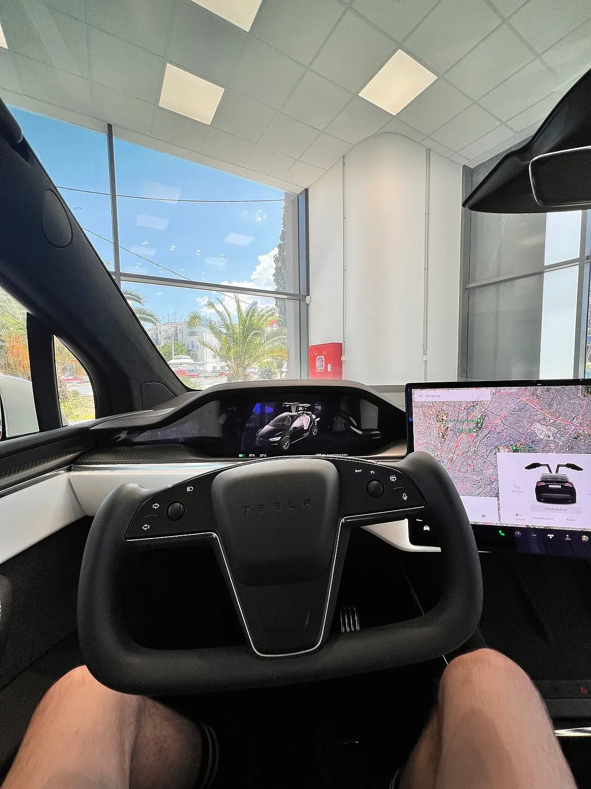
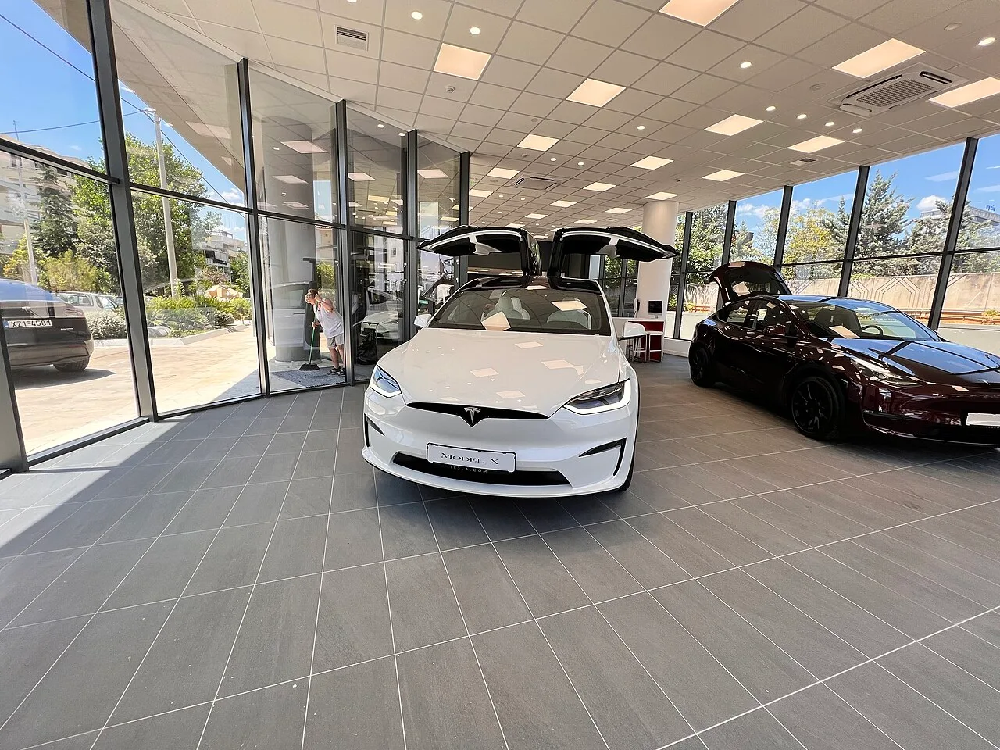
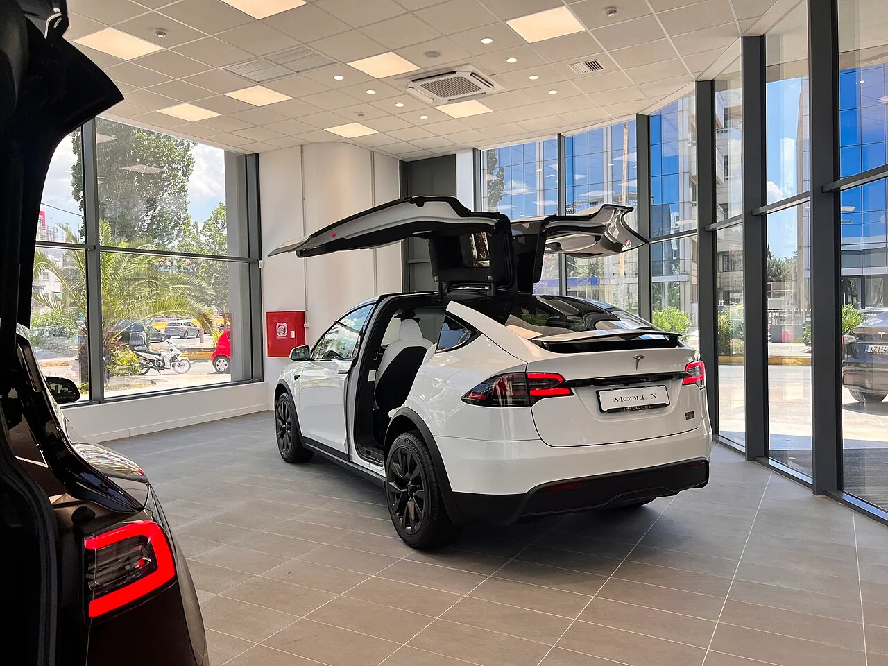

▲ 테슬라 모델X(사고 차량과 다른 자료사진). 미국에서 급가속을 둘러싼 급가속 소송이 제기되며 FSD·오토파일럿의 책임 소재가 쟁점으로 떠올랐다 ⓒ Wikimedia Commons
신호를 기다리던 차가 갑자기 교차로 한복판으로 튀어나갔다면, 그 순간 누가 무엇을 하고 있었는지가 소송의 전부가 된다. 미국 워싱턴주 커클랜드에서 2023년형 테슬라 모델X를 몰던 운전자가 정지 상태에서 차량이 돌연 가속해 도로 경계석을 강하게 들이받았다며 테슬라를 상대로 소송을 제기했다. 원고 측은 브레이크와 스티어링휠을 조작했지만 차량이 이를 거부했다고 주장하고 있으며, 사고 당시 작동 중이던 시스템이 기본 오토파일럿이었는지 완전자율주행(FSD)이었는지가 향후 법정 공방의 핵심 쟁점으로 떠올랐다.
1. 사고 경위 — 커클랜드 교차로에서 무슨 일이 있었나
오토트리뷴 보도와 미국 현지 매체 보도를 종합하면, 사고는 2023년 6월 29일 워싱턴주 커클랜드의 144번가와 124번 애비뉴 교차로에서 발생했다. 원고 린 응우옌(Linh Nguyen)은 당시 적색 신호에 정차해 있던 2023년형 테슬라 모델X가 타이어가 터질 만큼 격렬하게 급가속해 교차로 한가운데로 튀어나가 도로 경계석(커브)을 강하게 충돌했다고 주장했다. 차량에는 14세 딸이 동승하고 있었으며, 다행히 다른 차량과의 2차 충돌은 면했다.
원고 측은 소장에서 "오토파일럿(또는 자율주행) 시스템이 정지 상태를 유지하지 못하고 운전자 입력 없이 임의로 가속을 시작했으며, 운전자가 브레이크나 스티어링휠을 조작했으나 차량 시스템이 이를 거부하며 제동을 방해했다"고 주장한 것으로 전해졌다. 운전자는 목·허리·어깨·무릎·좌측 신체 등에 부상과 어지럼증·혼란 증상을 겪었고, 동승했던 딸도 부상과 함께 심각한 외상 후 스트레스와 정신적 충격을 호소한 것으로 알려졌다. 테슬라는 이 소송을 주 법원에서 연방법원으로 이송 신청했을 뿐, 사고 경위나 책임 소재에 대해서는 별도의 공식 입장을 내놓지 않고 있다.
| 항목 | 내용 |
|---|---|
| 사고 일시·장소 | 2023년 6월 29일, 미국 워싱턴주 커클랜드 교차로(적색 신호 상태) |
| 차량 | 2023년형 테슬라 모델X |
| 원고 | 린 응우옌(Linh Nguyen, 운전자), 워싱턴주 커클랜드 거주 |
| 원고 측 주장 | 정지 상태에서 타이어가 터질 만큼 격렬하게 돌연 가속, 브레이크·스티어링 조작에도 제동 실패 |
| 청구 내용 | 치료비 및 손해배상 청구(원고와 동승 딸의 신체·정신적 피해 포함) |
| 테슬라 측 반응 | 사고 경위·책임에 대한 공식 입장 없음(사건은 연방법원으로 이송 신청됨) |
📍 아직은 '원고 측 주장' 단계다
이번 사건은 소장이 접수된 초기 단계로, 위 내용은 모두 원고 측이 법원에 제출한 주장일 뿐 법원이 사실관계를 확정한 것은 아니다. 실제 사고 원인이 시스템 오작동인지 운전자 조작 실수인지는 차량 데이터 분석과 이후 재판 과정을 거쳐야 가려진다.
2. 왜 'FSD냐 오토파일럿이냐'가 쟁점이 됐나
이번 소송에서 눈에 띄는 대목은 원고가 자율주행 기능에 지불한 금액이다. 소장에서 원고는 "해당 자율주행 기술을 위해 약 1만 5,000달러(한화 약 2,000만 원)의 추가 비용을 지불했다"고 진술했는데, 이는 테슬라의 완전자율주행(FSD) 옵션 가격대와 일치한다.
하지만 실제 사고 당시 차량에서 작동하고 있던 시스템이 기본 탑재되는 오토파일럿이었는지, 별도로 결제한 FSD였는지는 아직 명확히 확인되지 않았다. 두 시스템은 기능 범위와 테슬라가 부담하는 법적 책임의 성격이 다를 수 있어, 이 지점이 향후 법정 공방의 핵심 쟁점으로 떠오를 전망이다.

▲ 테슬라 차량의 운전자 보조 시스템 화면 예시(사고 차량과 무관한 자료사진). 오토파일럿과 FSD는 기능 범위가 다르며, 사고 당시 어떤 시스템이 작동했는지가 쟁점이다 ⓒ Wikimedia Commons
이번 사건을 보도한 오토트리뷴 원문 기사는 아래에서 확인할 수 있다. 오토트리뷴 기사 바로가기
3. 美 NHTSA는 뭐라고 했나 — '급가속은 결함 없음', 'FSD는 조사 확대'
테슬라의 급가속 논란과 관련해 미국 도로교통안전국(NHTSA)은 이미 한 차례 결론을 낸 바 있다. NHTSA는 2023년 3월, 특정 테슬라 차량이 운전자 입력 없이 갑자기 가속할 수 있다는 집단 민원을 접수해 조사에 착수했다. 이후 차량 텔레메트리와 데이터 로그, 사건 보고서를 분석한 끝에 "의도하지 않은 가속을 유발할 수 있는 체계적 결함을 드러내지 않았다"며 조사를 종결했다. 테슬라 차량 수백만 대를 대상으로 한 리콜 청원도 함께 기각됐다.
반면 FSD와 관련한 조사는 오히려 강화되는 추세다. NHTSA는 2024년 10월 저시야(reduced visibility) 상황에서 발생한 충돌 사고들을 계기로 FSD 예비조사에 착수했고, 2026년 3월 이를 공학적 분석(Engineering Analysis) 단계로 격상했다. CBT뉴스 보도에 따르면 이 조사는 약 320만 대의 테슬라 차량을 대상으로 하며, 확인된 관련 사고는 초기 4건에서 9건으로 늘어났다. 엔지니어링 분석은 통상 12~18개월 내 마무리되며, NHTSA가 리콜 등 시정조치를 요구하기 전 마지막 조사 단계로 꼽힌다.
| 구분 | 급가속(SUA) 조사 | FSD 저시야 조사 |
|---|---|---|
| 조사 개시 | 2023년 3월 | 2024년 10월 |
| 진행 상태 | 종결(결함 없음) | 공학적 분석(Engineering Analysis)으로 격상(2026년 3월) |
| 대상 규모 | 약 220만 대(2013년 이후 전 차종) | 약 320만 대 |
| 결론·현황 | "체계적 결함 없음", 리콜 청원 기각 | 확인된 관련 사고 9건, 조사 진행 중 |

▲ 테슬라 모델X(사고 차량과 무관한 자료사진). NHTSA는 급가속 자체는 결함이 없다고 결론 냈지만, FSD 관련 조사는 오히려 확대되고 있다 ⓒ Wikimedia Commons
과거 사례도 있다. 2018년 캘리포니아에서 발생한 모델X 치사 사고에 대해 미국 국가교통안전위원회(NTSB)는 "오토파일럿이 고속도로 분리대 쪽으로 차를 유도했고, 운전자가 적절히 대응하지 못해 사고가 발생했다"고 결론 내린 바 있다. 시스템의 한계와 운전자의 대응 실패가 함께 지적된 사례다.
4. 급가속 소송, 왜 '운전자 과실 vs 시스템 결함' 가리기가 어려운가
급가속 의심 사고는 대부분 순식간에 벌어지고 목격자도 없는 경우가 많아, 사후에 원인을 규명하기가 쉽지 않다. 이 때문에 소송에서는 차량에 내장된 사고기록장치(EDR)의 가속페달·브레이크 페달 변위량, 조향각, 속도 데이터가 핵심 증거로 다뤄진다.
✅ 과실 규명이 어려운 이유
· 사고 직전 수 초 분량의 EDR 데이터에 의존해야 하는데, 이 기록만으로는 '왜' 페달이 그렇게 눌렸는지까지는 설명하지 못함
· 운전자는 브레이크를 밟았다고 기억하지만, 실제로는 가속페달을 브레이크로 착각했을 가능성을 배제하기 어려움
· 소프트웨어 기반 주행보조 시스템의 경우, 로그 데이터 자체를 제조사가 보유하고 있어 원고 측이 독립적으로 검증하기 까다로움
· 실제로 미국에서는 2025년 테슬라 오토파일럿 관련 소송에서 배심원단이 테슬라에 33%, 운전자에 67%의 책임을 나누어 인정한 사례도 있어, '전부 아니면 전무' 식으로 결론 나지 않는 경우가 많음
즉 객관적인 차량 데이터가 법정에 제출되고 양측 전문가의 분석을 거치기 전까지는, 운전자 과실 가능성과 시스템 결함 가능성을 둘러싼 진실 공방이 이어질 수밖에 없는 구조다. 이번 모델X 소송 역시 마찬가지 절차를 밟을 것으로 보인다.
5. 국내 급발진 소송은 어땠나 — EDR 신뢰성은 인정, '급발진 인정' 사례는 없어
한국에서도 급발진 의심 사고를 둘러싼 소송은 꾸준히 이어지고 있다. 2022년 12월 강원 강릉에서 12세 이도현 군이 할머니가 몰던 차량의 급발진 의심 사고로 숨진 사건에서, 유가족은 제조사인 KG모빌리티(옛 쌍용자동차)를 상대로 9억 2,000만 원 규모의 손해배상 소송을 제기했다.
춘천지법 강릉지원은 2025년 5월 원고 패소 판결을 내렸다. 재판부는 전자제어장치(ECU) 결함, 자동긴급제동(AEB) 미작동, 변속레버 미조작 주장을 모두 받아들이지 않았다. 특히 "사고 전 마지막 5초 동안 가속페달 변위량이 100%였다"는 EDR 기록의 신뢰성이 인정된다고 판시했고, 동일 연식 차량으로 진행한 재연시험에서도 EDR 기록상 속도와 실제 속도 차이가 시속 8~14km로 크지 않았다는 점을 들어 "운전자가 가속페달을 제동페달로 오인해 밟았을 가능성이 크다"고 결론 냈다.

▲ 테슬라 모델X 후면(사고 차량과 무관한 자료사진). 급가속·급발진 소송은 결국 EDR 등 객관적 데이터 해석 싸움으로 귀결되는 경우가 많다 ⓒ Wikimedia Commons
📍 국내에서 '급발진'이 법원에서 인정된 사례는 아직 없다
2026년 기준으로 국내 급발진 소송 중 운전자가 형사 책임을 면한 사례는 있지만, 민사·형사를 통틀어 법원이 '차량 결함으로 인한 급발진'을 정식으로 인정한 사례는 확인되지 않는다. 다만 2022년 12월 서울 강남구에서 발생한 별도의 급발진 의심 사고 소송에서는 법원이 제조사(현대차)의 ECU 관련 자료 공개 필요성을 검토하는 등, 소송 과정에서 제조사가 쥐고 있던 데이터에 대한 접근권을 넓히려는 시도가 이어지고 있다.
국내 급발진 소송에서의 ECU(차량 두뇌) 공개 공방에 대한 자세한 내용은 아래에서 확인할 수 있다. 관련 기사 바로가기
6. 요약
미국 워싱턴주에서 2023년형 테슬라 모델X 운전자가 신호대기 중 차량이 돌연 가속해 경계석을 들이받았다며 테슬라를 상대로 소송을 제기했다. 원고는 브레이크·스티어링 조작이 차량 시스템에 의해 거부당했다고 주장하며, 자율주행 기능에 약 2,000만 원을 지불했다고 밝혀 사고 당시 오토파일럿과 FSD 중 무엇이 작동했는지가 핵심 쟁점으로 떠올랐다.
NHTSA는 테슬라의 급가속(SUA) 문제 자체는 '결함 없음'으로 결론 내렸지만, FSD의 저시야 상황 대응 관련 조사는 오히려 공학적 분석 단계로 격상돼 약 320만 대를 대상으로 진행 중이다. 급가속·급발진 소송은 한국에서도 유사한 양상을 보이는데, 강릉 사건처럼 EDR 데이터의 신뢰성은 법원에서 인정되면서도 '차량 결함으로 인한 급발진'이 정식으로 인정된 사례는 아직 없다.
결국 이런 소송들은 객관적인 차량 데이터가 법정에 제출되고 양측 전문가 분석을 거치기 전까지는 결론을 예단하기 어렵다. 이번 모델X 소송 역시 사고 당시 작동 시스템과 EDR 데이터 분석 결과에 따라 향후 공방의 향방이 갈릴 것으로 보인다.